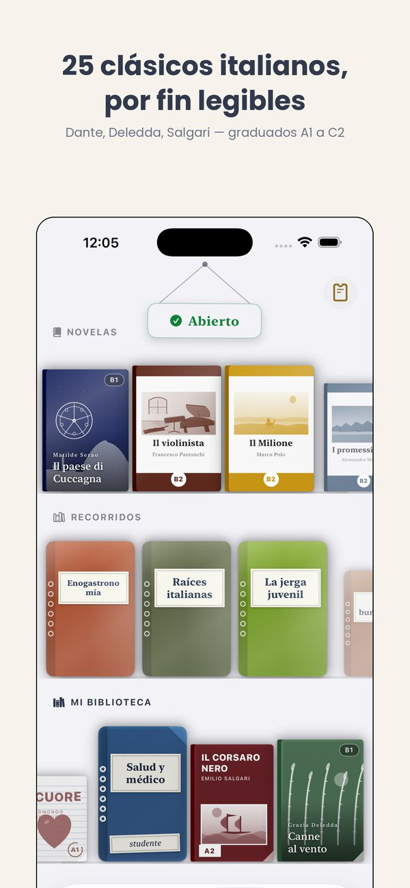
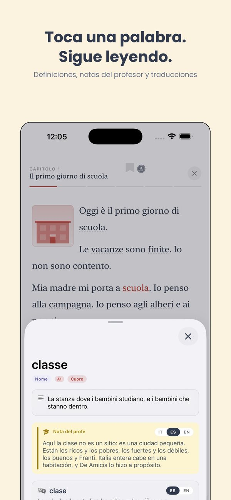
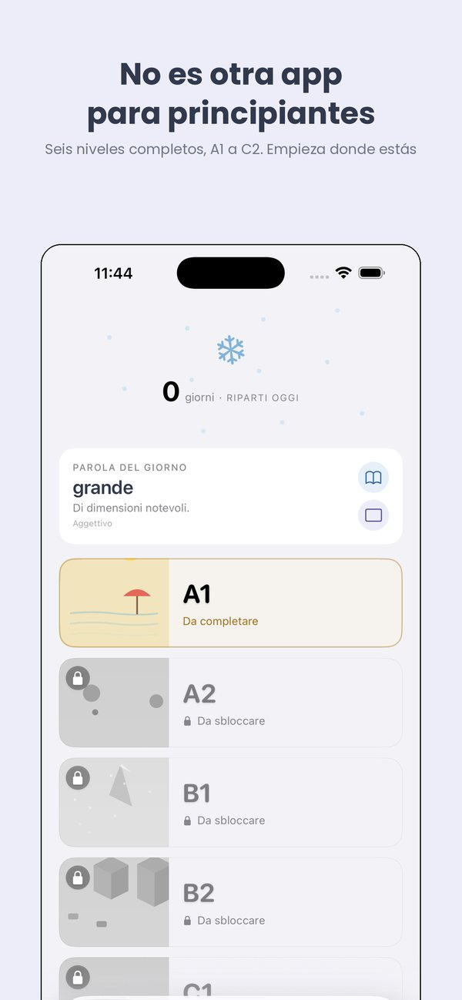
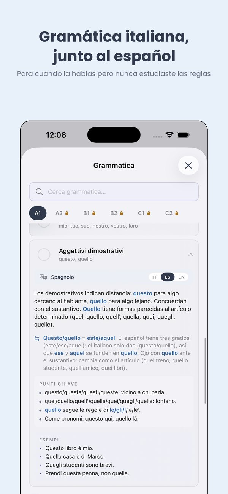
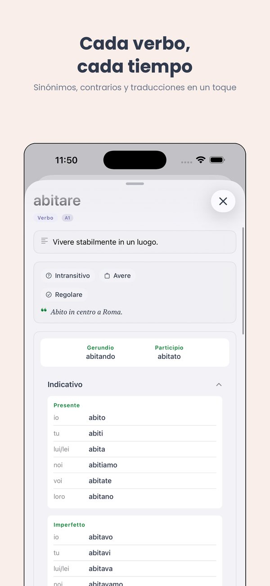
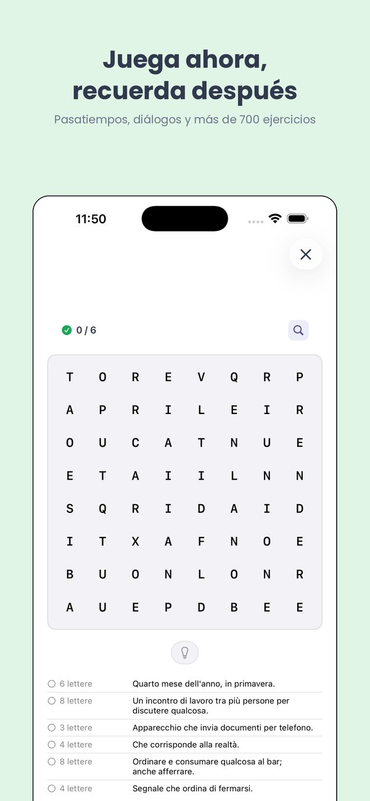

Te amo, te entiendo, te enseño.
15 modismos italianos que oirás todos los días
El italiano de verdad está lleno de modismos. Aquí los que oirás en cualquier bar de Italia.
Los 15 imprescindibles
- In bocca al lupo! — literalmente "en la boca del lobo". Significa "¡buena suerte!". Respuesta: Crepi (il lupo)!
- Non tutte le ciambelle riescono col buco. — "No todos los donuts salen con agujero". Las cosas no siempre salen.
- Avere le mani in pasta. — Estar involucrado en muchos asuntos.
- Costare un occhio della testa. — Costar un ojo de la cara.
- Prendere in giro qualcuno. — Tomar el pelo a alguien.
- Essere al verde. — Estar sin blanca.
- Mangiarsi le mani. — Arrepentirse mucho.
- Fare orecchie da mercante. — Hacer oídos sordos.
- Piove sul bagnato. — "Llueve sobre mojado" (las desgracias vienen juntas).
- Non vedere l'ora. — No poder esperar / estar deseando.
- Alzare il gomito. — Beber demasiado.
- Fare il finto tonto. — Hacerse el tonto.
- Essere una pappa molla. — Ser un blandengue.
- Mettersi le mani nei capelli. — Llevarse las manos a la cabeza.
- Chi dorme non piglia pesci. — Quien duerme no pesca (a quien madruga...).
Practica esto con Ti
La app iOS que te guía por el italiano de A1 a C2. Gratis para empezar.
Ti · iOS app
See Ti in action
The CEFR path, exercises, edicola and graded Italian classics — from A1 to C2, in 14 languages.






Más de Thuis Italiaans
Libros graduados por nivel · Clases de italiano en línea · Más de 700 ejercicios gratis